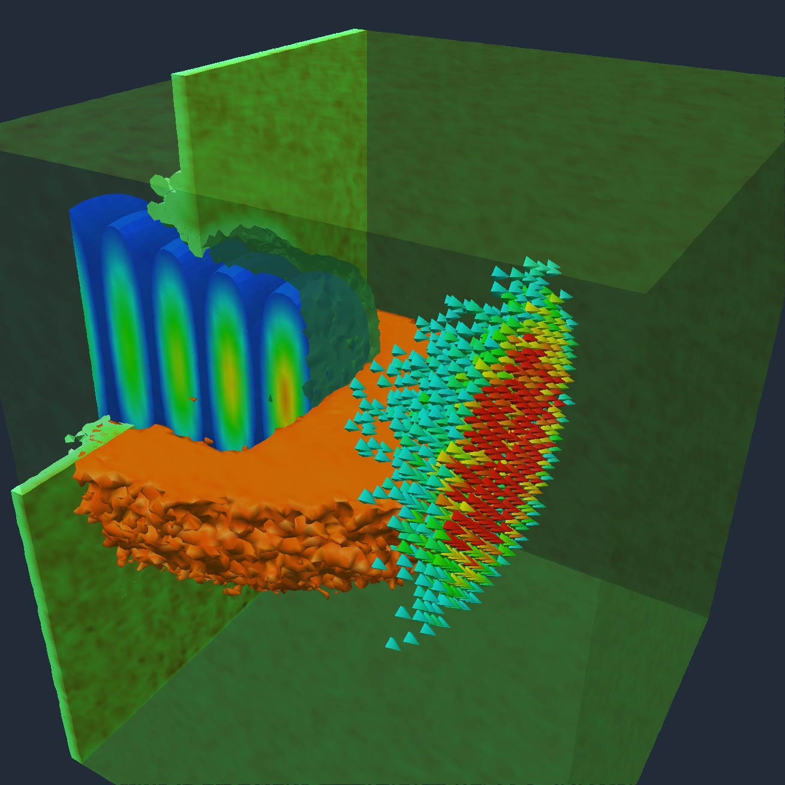
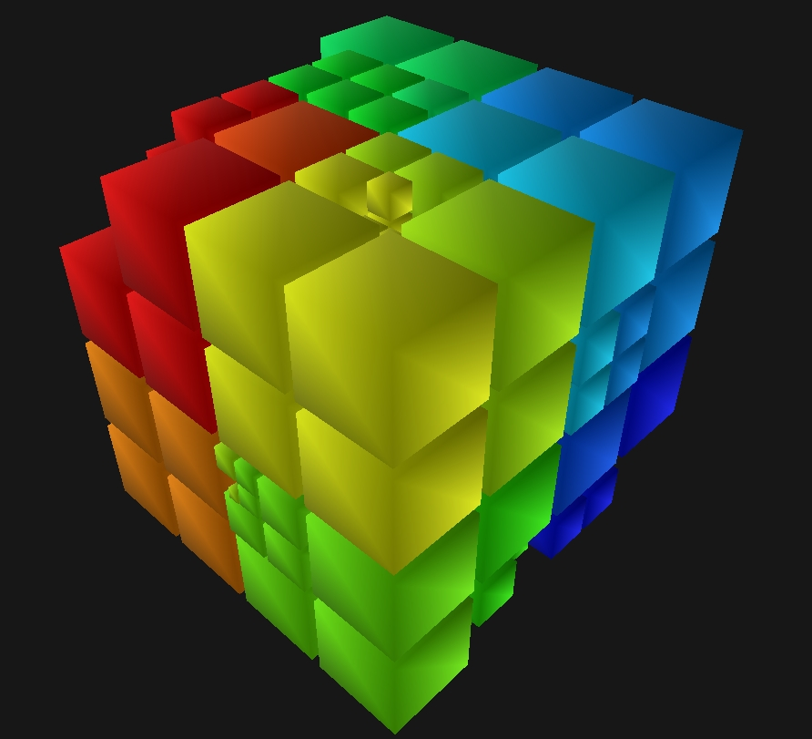

PEPC: A Multi-Purpose Parallel Tree-Code
PEPC - Pretty Efficient Parallel Coulomb-solver - is a parallel tree-code
for rapid computation of long-range Coulomb forces in N-body particle systems. Based on the original
Barnes-Hut algorithm, the code uses successively larger
multipole-groupings of distant particles to reduce the computational
effort in the force calculation from the generally
unaffordable O(N2) operations needed for brute-force summation, to a
more amenable O(N log N) complexity.
The parallel version is a pure MPI implementation of the Warren-Salmon
'Hashed Oct Tree' scheme, including several different variations of
the tree traversal routine - the most challenging component in terms
of scalability.
The public version is divided into kernel routines and 'front-end'
applications, which currently include a skeleton molecular dynamics
program ( PEPC-E), and a code for simulating laser- or
beam-plasma interactions ( PEPC-B). There is also a (non-public)
gravitational version ( PEGS) for modelling astrophysical
discs, developed in collaboration with the University of Cologne.
The code currently runs on IBM Regatta, BlueGene/L and standard Linux
clusters, but should be portable to any Unix-based parallel
architecture. The User Guide provides an introduction to compiling
and running the code.
 
Contact: pepc.zam@fz-juelich.de
WWW: http://www.fz-juelich.de/zam/pepc